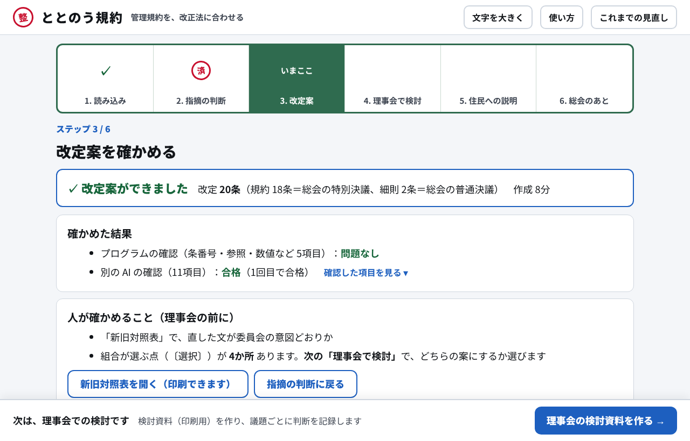

ステップ3：改定案を確かめる

13
12
6
9
10
8
13
年配の理事には文字が小さい
→ 「文字を大きく」を常に置く。本文18px、押す場所は高さ44px以上
12
ページが長い（約8,000px）。どこまで進んだか分からない
→ ステップごとの画面に分け、上に回覧板の押印欄。人が判断した段は「済」の判子、AI の段は ✓
6
何件あって、何をすればよいか分からない
→ 各ステップの冒頭に要約：入っている件数、決める件数、判断済みの件数
9
確認の結果が「satisfied」の英語だけ
→ 日本語だけで「合格（1回目で合格）」。項目は開いて読む
10
「選ぶ必要があります」のあと、どこで選ぶのか分からない
→ どのステップで選ぶかを、件数とともに書く
8
改定案ができても次へ進まない。次に何をするか分からない
→ 画面の下に、次の一手のボタンを1つだけ固定する